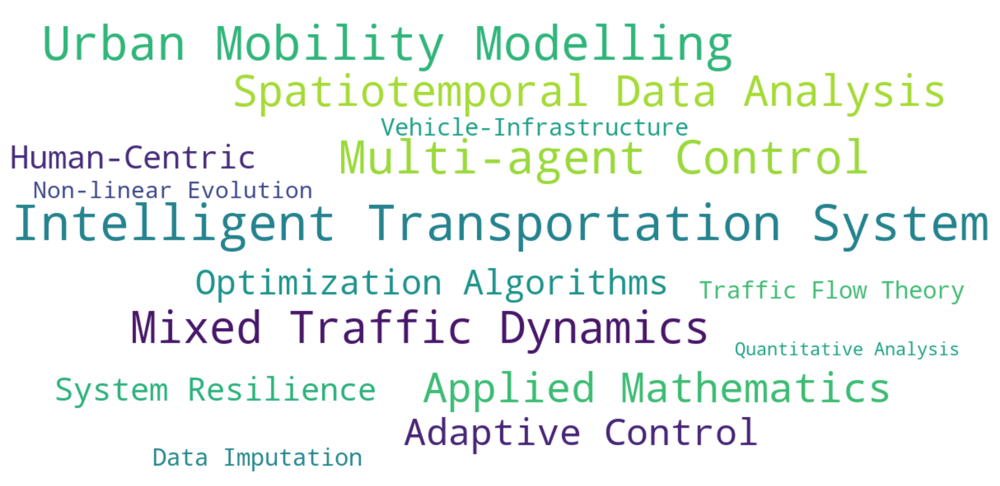
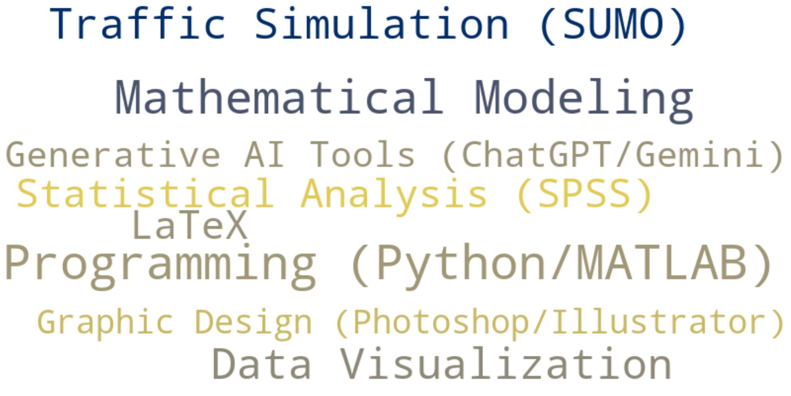
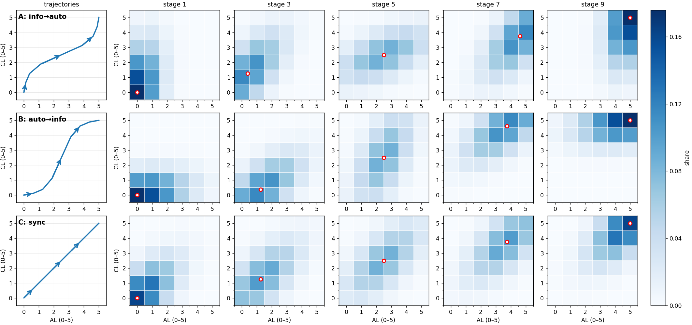
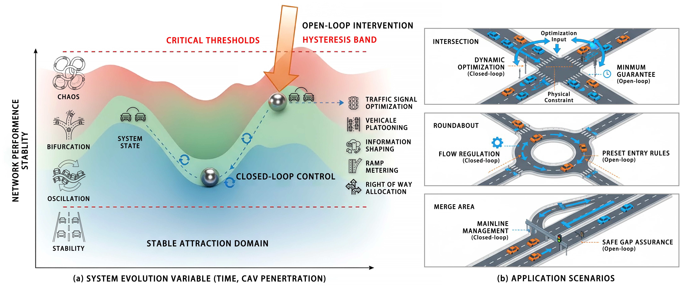
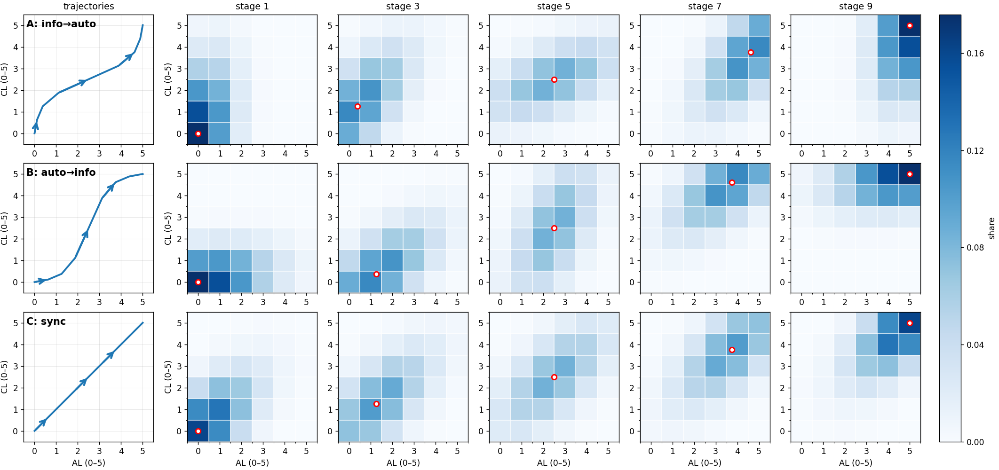
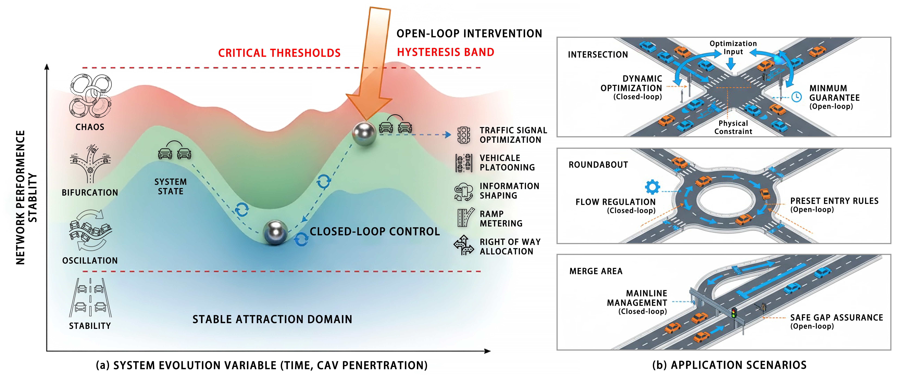

About Me
Hi, I'm Haopeng Deng, an undergraduate at Guangzhou Maritime University, passionate about data-driven intelligent control in urban mobility. My research centers on optimizing urban traffic flow, with a particular interest in how Connected and Autonomous Vehicles (CAVs) can reshape mobility. I’m currently working on Mixed-Autonomy Traffic Assignment, aiming to improve city traffic efficiency and safety with a human-centric approach. My goal is to leverage technology and data to create smarter, more resilient transportation systems for the future. I'm now actively seeking MPhil/PhD opportunities in Intelligent Transportation starting Fall 2026.
Interests & Skills
Research Interests
Core Skills
Publications
Accepted or Published
- Lei, H., Deng, H., Tang, J., et al. (2025). Dynamic Traffic Assignment under Mixed Traffic: Modeling, Evolution, and Solution Approaches. The 2025 International Conference on Artificial Intelligence and Autonomous Transportation (AIAT).
- Deng, H., Zheng, F., Ma, K., et al. (2025). Adaptive Truncated Schatten Norm for Traffic Data Imputation with Complex Missing Patterns. The 25th COTA International Conference of Transportation Professionals (CICTP). [DOI]
- Wang, Q., Deng, H., Deng, H., et al. (2025). Research on the Incentive Mechanism of a Comprehensive Carbon Pricing System for Carbon Emission Reduction and Carbon Sink Enhancement. Journal of Guangzhou Maritime University. [CNKI]
- Deng, H., Zheng, F., & Zhan, L. (2024). Application of Markov Processes in Traffic Signal Control. International Core Journal of Engineering. [DOI]
- Wang, Y., Zhang, H., Zhou, Y., Deng, H., et al. (2025). Exploring the 2-Part of Class Groups in Quadratic Fields: Perspectives on the Cohen–Lenstra Conjectures. Mathematics. [DOI]
Manuscripts
- Deng, H., Tang, J., Zhan, L., et al. (2025). Research on Traffic Governance Optimization in Kaiping City Based on a GRA–FCE Integrated Framework. Under revision for Journal of Transportation Engineering.
- Deng, H., Ma, K., Zhan, L., et al. (2025). Structural Equation Modeling of the Relationships among Traffic Safety KAP in Small-Medium Cities. Under review at Journal of Transportation Engineering.
- Xia, X., Deng, H., Tang, J., et al. (2025). Dynamic Traffic Assignment in Mixed Traffic: Modeling, Evolution, and Solution Approaches. Under revision for Journal of Transport Science and Engineering.
- Wang, Y., Deng, H., Zhu, L., et al. (2025). Approximate Sparse Stochastic Control for Time-Varying Systems with Control-Dependent Diffusion. Under review at Kybernetika. [Preprint]
Research Experiences
Guangdong Provincial Special Fund for Science and Technology Innovation Strategy
Cooperative Game-Based Network Traffic Assignment Mechanisms for Enhancing Urban Transportation Efficiency
I am leading a project to enhance urban transportation efficiency through game-based network traffic assignment mechanisms. I developed a unified Dynamic Traffic Assignment (DTA) model that decouples the penetration of Connected and Automated Vehicles (CAV) into two independent dimensions: Automation Level (AL) and Connectivity Level (CL). This framework drives the evolution of user equilibrium (UE) and system optimum (SO) mixed equilibria within the AL-CL space. Additionally, I proposed the AMPAS algorithm to efficiently solve the DUE, DSO, and UE-SO equilibria, achieving faster convergence compared to traditional methods. I also authored a systematic review on mixed-traffic DTA models, synthesizing insights from over 110 studies on equilibrium evolution, algorithms, and emerging research trends. Beside, I oversee task delegation, track milestones, and mentor junior researchers to ensure the project stays on schedule.
 



Guangdong Provincial College Student Innovation and Entrepreneurship Training Program
Intelligent Recognition of Urban Traffic Equilibrium States under Air-Ground Collaborative Monitoring
As a core member, I contributed to developing an intelligent system for recognizing urban traffic equilibrium states, integrating data from roadside sensors, UAVs, and probe vehicles. My team aims to construct high-dimensional traffic flow tensors and explore various data loss structures, including element-wise, fiber-wise, and mixed loss, to improve data recovery algorithms. In particular, I developed an adaptive truncated Schatten norm-based model (LRTC-ATSN) that successfully completed traffic datasets with missing patterns, achieving significant improvements in accuracy and performance. Additionally, I facilitated a partnership between academia and industry for traffic survey equipment procurement and guided junior students in fieldwork to gather data for analyzing traffic flow equilibrium states.
High-Quality Development Project for Hundred Counties, Thousand Towns, Myriad Villages
Investigation and Research on Traffic Safety and Planning in Kaiping City
I led a team focused on traffic safety and planning in Kaiping City. We worked closely with the Municipal Transportation Department, analyzing traffic accident and violation data to identify accident hotspots and hazard types. My team conducted on-site surveys, interviews, and drone photography to gather data on traffic flow, vehicle management, pedestrian movement, and infrastructure. I applied SPSS and LLM tools to analyze the survey and interview data, uncovering key issues and proposing actionable solutions that contributed significantly to the city's traffic safety and planning efforts. I also authored two papers by the project: one that used Structural Equation Modeling to explore the relationship between traffic safety behavior and attitudes, and another assessing Kaiping's traffic governance using Grey Relational Analysis and Fuzzy Evaluation. The findings were eventually adopted by the Municipal Transportation Bureau.
Awards and Honors
- Best Poster (International), 25th COTA International Conference of Transportation Professionals 2025
- Meritorious Winner (International), Interdisciplinary Contest in Modeling (ICM), COMAP 2025
- Third Prize (Provincial), China Undergraduate Mathematical Contest in Modeling 2024
- Third Prize (Provincial), 18th "Challenge Cup" National Students' Academic Works Competition 2024
- Second Prize (School), 19th National Competition of Transport Science and Technology 2024
- Science and Technology Innovation Model Scholarship, Guangzhou Maritime University 2024
- Third-Class Merit Scholarship, Guangzhou Maritime University 2023
- Bronze Award (Provincial), FLTRP · ETIC Cup English Writing Contest 2023